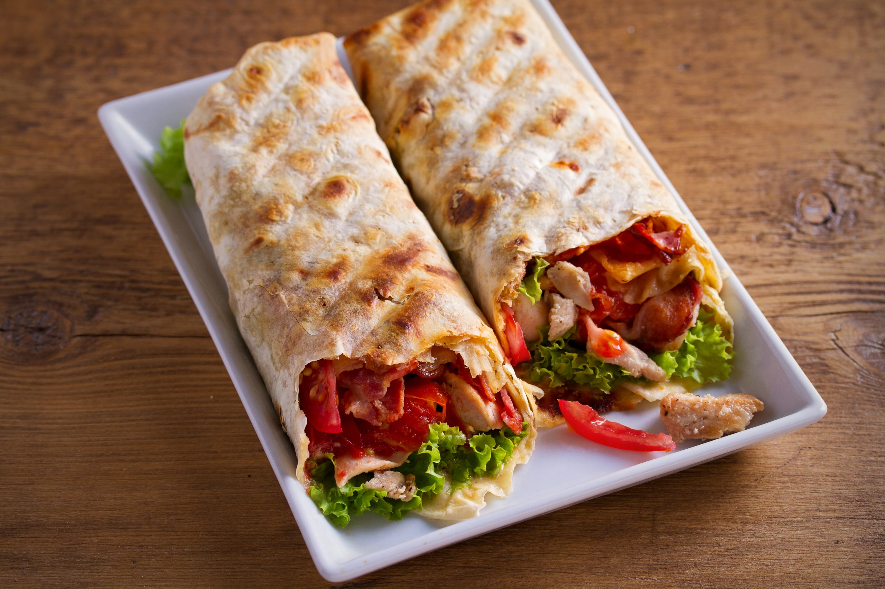
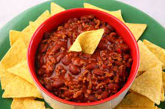

Crocantes
NACHO
 1 kg de carne moída
1 cebola grande ralada
2 pacotes de Doritos (grande)
1 colher e 1/2 de sopa bem cheias de pimenta chilli
Sal e temperos como ervas finas, manjerona e outros, a gosto
5 colheres de sopa de óleo
5 dentes de alho amassados
200 g de queijo cheddar (aquele de bisnaga)
3 colheres de sopa de molho inglês
Coloque numa panela o óleo a cebola e o alho e doure, em seguida acrescente a carne moída e frite bem.
Então coloque os temperos do seu gosto, o sal, o molho inglês e a pimenta chilli.
Depois de preparada a carne, forre uma travessa com o doritos, coloque a carne por cima, depois o sour cream e por último o queijo cheddar.
Coloque no forno por cerca de 15 minutos numa temperatura de cerca de 180º graus.
Prontinho... Uma delícia!
1 kg de carne moída
1 cebola grande ralada
2 pacotes de Doritos (grande)
1 colher e 1/2 de sopa bem cheias de pimenta chilli
Sal e temperos como ervas finas, manjerona e outros, a gosto
5 colheres de sopa de óleo
5 dentes de alho amassados
200 g de queijo cheddar (aquele de bisnaga)
3 colheres de sopa de molho inglês
Coloque numa panela o óleo a cebola e o alho e doure, em seguida acrescente a carne moída e frite bem.
Então coloque os temperos do seu gosto, o sal, o molho inglês e a pimenta chilli.
Depois de preparada a carne, forre uma travessa com o doritos, coloque a carne por cima, depois o sour cream e por último o queijo cheddar.
Coloque no forno por cerca de 15 minutos numa temperatura de cerca de 180º graus.
Prontinho... Uma delícia!
GUACAMOLE
 3 avocados
1 cebola média
1 dente de alho amassados
1 tomate grande
Suco de 1 limão
½ pimenta dedo-de-moça sem sementes
Sal a gosto, Coentro a gosto
Comece colocando a cebola, alho e tomate em pedaços grandes no processador Mondial
Use a função de pulsar até que tudo fique em pedaços menores
então acrescente os demais ingredientes e bata em velocidade baixa até obter a textura desejada
Algumas pessoas preferem o guacamole com pedacinhos pequenos e mais cremoso e outras pessoas preferem com mais pedaços.
Prontinho... Uma delícia!
3 avocados
1 cebola média
1 dente de alho amassados
1 tomate grande
Suco de 1 limão
½ pimenta dedo-de-moça sem sementes
Sal a gosto, Coentro a gosto
Comece colocando a cebola, alho e tomate em pedaços grandes no processador Mondial
Use a função de pulsar até que tudo fique em pedaços menores
então acrescente os demais ingredientes e bata em velocidade baixa até obter a textura desejada
Algumas pessoas preferem o guacamole com pedacinhos pequenos e mais cremoso e outras pessoas preferem com mais pedaços.
Prontinho... Uma delícia!
TORTILHAS

1 1/2 xícaras de trigo
1/2 colher (chá) de sal
150 ml de água morna
1 1/2 xícaras de fubá
3 colheres de manteiga
Misture os 3 primeiros ingredientes, junte a manteiga e misture com as pontas dos dedos.
Acrescente a água aos poucos, misturando até formar uma bola.
Trabalhe a massa sovando por 5 minutos, até não grudar mais nas mãos.
Caso grude junte um pouco mais de fubá.
Deixe descansar enrolada num filme plástico por 45 minutos.
Abrir e cortar com cortador ou com um copo em círculos para depois fritar.
Não precisa abrir muito fina.
Frite numa frigideira untada com manteiga para não grudar.
Deixe-as levemente douradas.
Reserve as tortilhas
Prontinho... Uma delícia!
CHILLI
Pingente Life Castelo de Chillon Esmaltado

1 kg de carne moída
5 colheres de sopa de óleo
1 cebola grande ralada
5 dentes de alho amassados
200 g de queijo cheddar
1 e 1/2 colher (sopa) de pimenta chilli
3 colheres (sopa) de molho inglês
Sal e outros temperos a gosto
Em uma panela, refogue a cebola e o alho ao mesmo tempo, deixe dourar.
Acrescente a carne moída já temperada e frite bem.
Para finalizar, adicione o molho inglês e a pimenta chilli.
Prontinho... Uma delícia!
SOUR CREAM
1 caixinha de creme de leite
1 pote de cream cheese
2 colheres de sopa de vinagre branco
Suco de 1/2 limão
Bata no liquidificador o creme de leite, o cream cheese, o vinagre e o limão ao mesmo tempo.
Reserve
Prontinho... Uma delícia!
CHURROS
200 g de farinha de trigo
250 ml de água
2 colheres (sopa) de açúcar
2 colheres (sopa) de manteiga
1 pitada de sal
2 ovos
Açúcar e canela para polvilhar
Óleo para fritar
Saco de confeiteiro com bico para churros
Doce de leite ou creme de avelã a gosto
Em uma panela, misture a água, o açúcar, a manteiga e o sal e ligue em fogo baixo.
Quando ferver e estiver tudo misturado, adicione a farinha e mexa bem.
Assim que a massa desgrudar do fundo da panela, desligue o fogo.
Transfira o conteúdo para uma batedeira, adicione os ovos e bata até misturar bem e a massa ficar morna.
Coloque a massa em um saco de confeiteiro.
Em uma panela, esquente bem o óleo.
Assim, quando estiver quente, aperte o saco de confeiteiro para a massa cair no óleo e corte no tamanho desejado.
Frite até dourar.
Polvilhe o açúcar e a canela por cima dos churros.
Por fim, sirva com doce de leite ou creme de avelã.
Prontinho... Uma delícia!